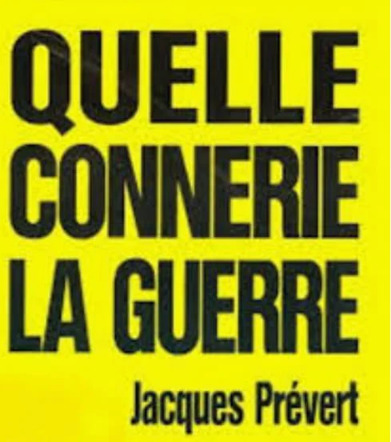

Publication d’archives
Ukraine : "Non à la guerre"
Date indiquée par Facebook · 25 février 2022
Texte conservé avec la publication
Contexte du dossier
Le 24 février, la page relaie sous le titre « Non à la guerre » une déclaration de Fabien Roussel, dont le contenu n’est pas transcrit dans la légende. Le 25, elle annonce sa participation au rassemblement niortais du soir. Le retour du 26 rapporte l’intervention du secrétaire départemental Frédéric Giraud : condamnation de l’opération militaire russe, protection des civils et reprise de négociations. Il exprime également l’opposition alors portée par le PCF 79 aux livraisons d’armes. Ce sont des positions situées au début de la guerre, et non une évaluation de son évolution ultérieure.

Sources
Archive rouge · export Facebook · AR-0002-FB-01950
À lire aussi · Protéger les Kurdes de France